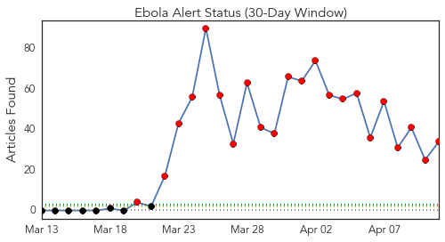
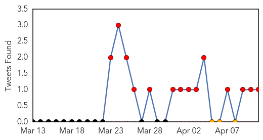
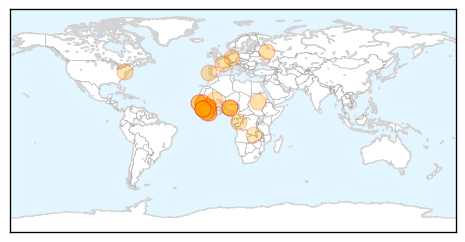
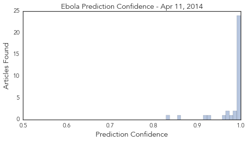

Toggle navigation
Early Warning
Daily Alerts
Ebola
Apr 11, 2014
Compare to:
-
Dengue Fever
Hemmorhagic Fever
Mold/Fungal Infection
Influenza
Meningitis
Pertussis / Whooping Cough
Middle East Respiratory Syndrome
Cholera
Hepatitis
Chikungunya
Yellow Fever
Bubonic Plague
West Nile Virus
Swine Flu
Measles
Unknown
Mumps
30 Day Trends
Web: 22
alerts
, 0
warnings
Twitter: 14
alerts
, 0
warnings
Top Articles:
1.000
DFA updates travel advice for Irish citizens, following Ebola outbreak
1.000
Canadian doctor on front lines treating Ebola patients in West Africa
1.000
Ebola, Lassa fever and the bush meat connection
1.000
Portugal Ebola scare unfounded but authorities take measures
1.000
Ebola outbreak stalls some West Africa travel
1.000
Shocking truths about Ebola Virus Disease
1.000
The Ebola Outbreak 3 Weeks In: Dire But Not Hopeless
1.000
Ebola Updates and an Interview
1.000
Russian Doctors Would Immediately Recognize Ebola – Watchdog
0.999
Ebola virus disease, West Africa – update
0.999
Ebola outbreak in Guinea ‘could become regional epidemic’
0.999
International Aid Providers Join Hands To Stop Further Ebola Spread!
0.999
Aid Groups Take Emergency Steps against Ebola Onslaught — Naharnet
0.999
Ebola outbreak empties West African hotels
0.999
Ebola Virus Disease Outbreak in West Africa 158 Cases, 101 Deaths
0.999
The foreign ministry is helping support stopping the spread of the Ebola virus in Africa - Guinea
0.998
Rise Of A Deadly Disease; Health Minister, Former Nigeria Vice President, Seeks Measures
0.998
Ebola in West Africa: EU increases its immediate health assistance to €1.1 million
0.998
No Ebola Virus In Ghana – Epidemiologist
0.998
Ebola in West Africa: EU increases its immediate health assistance to €1.1 million
0.997
EUR1.1 Million Emergency Aid To Contain Spread Of Ebola In West Africa
0.996
Guinean Ebola survivor tells of being 'reborn'
0.995
Ghana testing blood samples of suspected Ebola case - Emirates 24
0.994
Guinean Ebola survivor tells of being ‘reborn’
0.990
EU increases assistance in Africa to stop Ebola from expanding - Xinhua
0.984
UPDATE 1-Fatal virus in Ghana tests negative for Ebola
0.982
UN AND AFRICA: Rwanda genocide remembered 20 years on
0.969
The Ebola Survivors: Reborn But Not Always Embraced
0.968
The race to contain West Africa's Ebola outbreak (Wired UK)
0.963
Reborn But Not Always Embraced
0.930
Ebola drug could be ready for human testing next year
0.915
MSF resumes activities in Ebola centre in southeast Guinea
0.860
Game Plan Against Epidemics and Access to Quality Healthcare Receive Attention 2014-04-11
0.828
Online army helps map Guinea's Ebola outbreak
Top Tweets:
0.778
off to conakry guinea to investigate wide spread ebola outbreak. I have been to many hot zones, but nothing like this.
Web/News Articles

Tweets

Article Locations

Article Confidences
